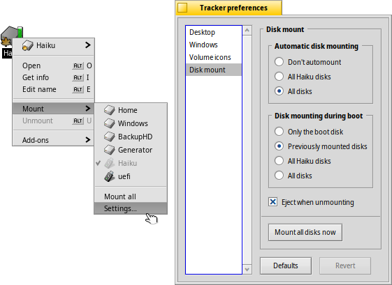
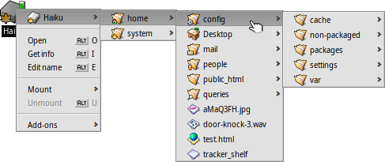
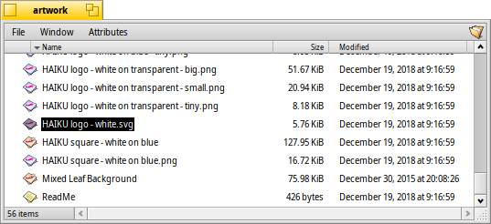
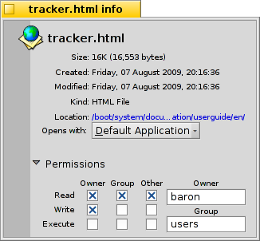

日本語
日本語 Català
Català Deutsch
Deutsch English
English Español
Español Français
Français Italiano
Italiano Magyar
Magyar Polski
Polski Português
Português Português (Brazil)
Português (Brazil) Română
Română Slovenčina
Slovenčina Suomi
Suomi Svenska
Svenska 中文 ［中文］
中文 ［中文］ Русский
Русский Українська
Українська| インデックス |
|
ボリュームのマウント ナビゲーション 外観 Tracker 環境設定 ファイル操作 処理状況 |
Tracker
Tracker はすべてのファイルへのグラフィカルインターフェースです。それは新しいファイルおよびフォルダーの作成や、検索、起動や名前の編集のほかに、既存のファイルのコピーや削除も行います。
ほかのアプリケーションと同様に (アイコンを備えたデスクトップは実際には背面にある単なるフルスクリーンウィンドウです)、Tracker はそのウィンドウとともに Deskbar 上に現れ、終了および再起動ができます。クラッシュやフリーズした Tracker (あるいは不安定な Deskbar) を終了して再起動するもっとも簡単な方法は、チームモニターを呼び出すことです。
 ボリュームのマウント
ボリュームのマウント
ハードディスク、CD、USB スティック等にアクセスするためには、まずボリュームをマウントしなければなりません、すなわち、システムにそれがそこにあることを知らせます。ボリュームをマウントするには、デスクトップあるいはマウント済のボリューム (ブートディスク等) を右クリックして サブメニューからボリュームを選択します。Deskbar に同様のマウントメニューが見つかります。
もあるため、起動のたびにすべてを手動でマウントする必要はありません。上図の設定は、接続や挿入されたあらゆる記憶装置を自動的にマウントし、以前にマウントされたすべてのディスクを起動時にマウントするでしょう。
ナビゲーション
デフォルトでは、フォルダーをダブルクリックすると、Tracker は親ウィンドウを開いたままで新しいウィンドウを開きます。これではすぐに散らかったデスクトップになってしまいます。
これを防ぐには、OPT キーを押します。それにより、自動的に親ウィンドウを閉じます。
これはまた、キーボードナビゲーションでも当てはまります。さらに詳しくは、ショートカットやキーの組み合わせのトピックを見てください。
Tracker の主な目的の 1 つは、ほかのプラットフォーム上のファイルマネージャーと同様にフォルダーを移動することです。Haiku の Tracker には、効率的に移動を支援するいくつかの独自の特徴があります。
サブメニューのドリルダウン
ダブルクリックで次々とフォルダー階層を下る代わりに、ドリルダウンのためのもっとよい方法があります。
フォルダー上で右クリックすると、通常のコンテキストメニューの一番上に現在のフォルダーのサブメニューが見つかります。それはフォルダーの 1 階層下へ移動します。捜しているファイルかフォルダーを見つけてそれをクリックで開くまで、階層を下って移動してください。上の図は、フォルダー /boot/home/config/ の内容を表示しています。
ファイルをドラッグしながら行う場合、ファイルは最後にドロップした所に移動するでしょう。
同様の方法は、Tracker の任意のウィンドウから使用できます。

項目の数を表示している左下のエリアをクリックすると、現在のフォルダーの上の階層にあるフォルダーのサブメニューが見つかるでしょう。そこから、いつも通りフォルダーを経由してドリルダウンできます。
デスクトップは、常に階層のトップレベルであり、Tracker がマウントされたボリュームを表示する場所であることに注意してください。したがって、別のディスクに移動したければ、まずトップレベル (デスクトップ) へ移動してからディスクへ移動する必要があります。
ファイルをフォルダーにドラッグした時にも同様のサブメニューナビゲートができるでしょう。フォルダー上でしばらく留まると、サブメニューがポップアップし目的地へドリルダウンできます。もし右マウスボタンを押してドラッグを始めた場合は、ボタンを離した時に、ファイルのコピー、移動、またはリンクから選択できます。
先行入力でファイルにジャンプする
ほかのオペレーティングシステムのファイルマネージャーでこのコンセプトは良く知っているかもしれません。ファイル名の最初の数文字をタイプすると、これらの文字に最初に一致するファイルにジャンプします。Haiku はそのアイデアを一歩進めました。これらの文字で始まるファイルが無いときは、ファイル名に文字列を含む最初のファイルにジャンプします。ファイル名中に文字列が無い場合は、次に属性が検索されます。
上の例では、"Haiku logo" で始まるたくさんのファイルがあるので、単純な先行入力は無駄です。しかし、Haiku では、"web" とタイプすることで、最初のファイルである、"Haiku logo - website" に正確にジャンプします。タイプされた文字は左下 (通常、フォルダー中の全ファイルの数が表示される場所) に表示されます。1 秒後に元の表示に戻り、新しい先行入力検索を開始できます。
先行入力フィルター
入力中にジャンプする代わりに、先行入力文字列に一致しないファイルを取り除くオプションもあります。特に、ファイルがたくさんあるフォルダーの場合、これは明快さを著しく改善します。SHIFT SPACE を区切りとして使うことで、複数の文字列でフィルタリングさえできます。
先行入力ジャンプと異なり、フィルタリングは ESC を押すか、ウィンドウを閉じる (または、シングルウィンドウナビゲーションモードのときはフォルダーを去る) までは有効です。
この先行入力フィルタリングは、Tracker preferences 中で設定されます。
外観

Tracker ウィンドウは、 メニューから 3 つの表示モードを提供します。
(ALT 1) - 大きいアイコンで表示します。サブメニューからサイズを変更できます。また、ALT +/- で、アイコンを拡大縮小できます。
(ALT 2) - 小さいアイコンで表示します。
(ALT 3) - A detailed list of your files enabling you to show/hide file attributes. (See topic Attributes.) From the submenu you can choose to use either mini or large icons.
メニューはほかに多くの機能を提供します。
(ALT Y) - ウィンドウを望ましいサイズにリサイズします。
- アイコンモード、またはミニアイコンモードでのみ使えます。サブメニューによりさまざまなプロパティでの並び替えができます。
、、、、、, 、
- 並び替えを逆順にします
(ALT K) - すべてのアイコンを見えないグリッド上に整列させます。SHIFT を押しながら選択すると、メニューは となり、整列に加えて、すべてのアイコンを上記で選択されたキーで並び替えます。
(SHIFT ALT A) - ファイルを正規表現で選択します。
(ALT W) - ウィンドウを閉じます。SHIFT を押しながら選択すると、メニューは となり、すべての Tracker ウィンドウを閉じます。
(ALT Q) - 現在のワークスペース中のすべての Tracker ウィンドウを閉じます。フォルダーをクリックする時に OPT キーを押し忘れ、結果として開いた Tracker ウィンドウでワークスペースが散らかった場合に便利です。
しばしば、完全な (ALT K) を使わずに少しのアイコンを再整列したい場合があります。その場合、アイコンを選択して、新しい場所へドラッグします。アイコンをドロップする前に ALT キーを押し続けます。これによりアイコンは見えないグリッドに整列されます。
その他の機能は、Tracker 設定を除いて説明を要しないものです。
Tracker 環境設定
は、多くの設定項目を提供するパネルを開きます。それらは読んでわかるものではありませんが、一度試せば明らかになるはずです。すべての設定はライブで適用されるので、変更した結果はすぐに見られるでしょう。
それでは、わかりにくい設定を手短に。
- マウントされたディスクを、すべてデスクトップに表示するか、またはデスクトップ上の単独のディスク (Disks) アイコンをクリックして表示されるウィンドウ中に表示するかを決めます。
- を設定できます。つまり、フォルダーをダブルクリックすると、それ自身のウィンドウを開く代わりにすでに開いているウィンドウの中に開きます。これは上記の OPT キーを押しながらクリックするのとは違います。なぜなら、ウィンドウごとに保存された位置やサイズを失うからです。

Tracker をへ切り替える前に、より慣れているかもしれないので、まずはメニューベースのブラウジングを試して見ることを勧めます。メニューベースに慣れた後では、実際にはるかに速く動作するかもしれません。一方、シングルウィンドウブラウズはナビゲーターを提供します。そこでは、パス名の入力や、コピー＆ペーストができます。また、戻る、進む、および上の階層へ移動のボタンを使用できます。
を有効にすると、入力している間、入力文字列がファイル名または表示されている属性にマッチするファイルだけを表示するように、Tracker ウィンドウの内容をフィルタリングします。上記を見てください。
- ディスクアイコンの横に表示される空き容量表示の有無や色を設定します。
- "ボリュームのマウント"で述べられているように、いつ、どのディスクが自動でマウントするかを定義します。
ところで、このパネルは Deskbar の Tracker としても利用できます。
ファイル操作
ファイルを選択したときに呼び出される メニューコマンドのほとんどは、そのファイルを右クリックしたときに呼ばれるコンテキストメニュー中にも表示されます。
例によって、コマンドの使い方はかなり明白なものです。
- ファイルまたはフォルダーを検索します。より多くの情報を得るためにクエリのトピックを見てください。
- 新しいフォルダー、またはテンプレートに基づいたファイルを作成します。

を選択すると、/boot/home/config/settings/Tracker/Tracker New Templates フォルダーを開きます。そのフォルダーにファイルを作成すると、 メニューのテンプレートとしてファイルの名前およびほかの属性を持ったファイルタイプを提供するでしょう。ここでは、ファイルタイプが text/plain であるファイル "Text" があります。より多くの情報については、ファイルタイプのトピックを見てください。
- このサブメニューは、このファイルタイプを扱えるアプリケーションをすべて表示します。

ファイルがダブルクリックされた時にファイルを開く優先アプリケーションにチェックマークがつきます。このサブメニューは最初に正確なファイルタイプ (この場合、タイプ text/plain であるテキストファイル) を扱えるアプリケーションをリストします。次に、一般にそのスーパータイプ (ここでは text/*) を扱えるすべてのアプリケーションが、最後に、任意のファイルを処理できるものがリストに入ります。サブメニュー中のアプリケーション名ではなく、 をクリックすると、代わりにパネルが開きます。

ここで、再びサブメニューにプログラムのリストを見つけるでしょう。1 つのファイルを選択して、 ボタンをクリックすると、そのファイルタイプ (ここでは text/plain) を持つすべてのファイルに対する優先アプリケーションを変更できます。
-
このパネルでは、選択されたファイルの情報の表示およびデフォルトアプリケーションの設定が行えます。また、パネルの一部を拡げると、ファイルのパーミッションおよび所有者を設定できます。パスをクリックすると、Tracker ウィンドウ中にファイルを選択します。
, 、 - ファイル名の編集、ファイルの複製、または選択したファイルをごみ箱へ移動できます。
、、 - サブメニューナビゲーション方法を使用して、選択したファイルの移動、コピー、またはリンクができます。メニューを起動する間に SHIFT を押し続けると、相対リンクを作成するオプションを提供します。
、、 - クリップボードを使ってファイルのカット、コピー、そしてペーストができます。メニューを起動する間に SHIFT を押し続けることによって、おそらく別のフォルダーからファイルを でき、後でほかのどこかにペーストできます。さらに、SHIFT を押し続ける間、クリップボードにコピーされたファイルをリンクとしてペーストできます。
- ファイルタイプを見つけ出して、たとえば、wget でファイルを転送した場合のように、ファイルがファイルタイプを持っていなければ、セットするでしょう。メニューを起動する間に SHIFT を押していると、メニューは に変わります。これは、ファイルタイプを識別し、誤りだった場合は修正します。
- すべての一般的な Tracker アドオンと、選択されたファイルを扱えるアドオンを表示します。詳しくは、Tracker アドオンのトピックを見てください。
処理状況
ファイルをコピー、移動、または削除する場合、Tracker は進行状況をステータスウィンドウで表示します。複数の処理を始めた場合、ジョブごとに状態が表示されます。

右側に、処理を休止あるいは完全に止める 2 個のボタンがあります。大きな処理を一時的に休止することはたまには有用かもしれません。たとえば、大きなアプリケーションを速く起動する必要があるかもしれません。大量のデータコピーはユーザーのハードディスクの I/O 帯域幅を詰まらせるので、ワークフローを遅らせます。